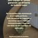
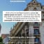
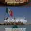
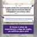
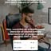
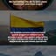

A Masterclass Get Hired trouxe 4.255 leads (212% da meta) com CPL de R$ 3,27 — e mesmo assim fechou com prejuízo de R$ 5.404, o primeiro resultado negativo. Este documento mostra por quê, com uma resposta clara: o funil não quebrou na captação nem no pitch — quebrou no comparecimento (6,18% vs. meta de 30%). E mostra que mexer nessa única alavanca já viraria o jogo.
Esse é o primeiro lançamento no negativo — e a gente trouxe ele inteiro, sem maquiar. Mas negativo não é fracasso quando ensina: este debriefing é pra extrair o que replicar e o que corrigir, não pra lamentar.
A leitura rápida: a captação foi um sucesso (4.255 leads, 212% da meta, CPL baixíssimo) e quem ficou no pitch quase não saiu (retenção de 88,5%). O problema mora no meio: de 4.255 leads, só 263 apareceram ao vivo. Com 6% de comparecimento, nenhuma captação boa e nenhum pitch bom conseguem pagar a conta. Resolver esse um ponto é o que separa este lançamento de um positivo.
Do investimento ao resultado — captação, WhatsApp, aula ao vivo, vendas e custos.
Masterclass Get Hired em 20/09 (19h Colômbia / 21h Brasil), oferta de US$ 197 (US$ 297 com call). Captação abriu em 31/08 e o carrinho ficou aberto de 20 a 27/09.
A frente que a gente controla direto bateu 212% da meta com custo por lead baixíssimo. Aqui não houve problema nenhum.
| Origem | Leads | Share |
|---|---|---|
| ADS México | 1.251 | 29,4% |
| ADS Geral | 1.789 | 42,0% |
| ADS Colômbia | 1.177 | 27,7% |
| Orgânico | 38 | 0,9% |
| Total | 4.255 | 100% |
CPL de R$ 3,27 e 212% da meta. Os criativos e a estrutura de captação funcionam — isso volta igual no próximo.
66,63% dos leads entraram no grupo de WhatsApp (2.835 pessoas). O canal de aquecimento está montado; faltou usá-lo pra garantir presença.
Os vídeos "soy reclutador" e "trabajar remoto" carregaram a captação com CPL abaixo de R$ 2,70. Dados por anúncio do Gerenciador da Meta — ele atribui 4.583 eventos de lead (vs. os 4.255 oficiais), por isso o CPL médio por criativo fica abaixo do CPL oficial do lançamento (R$ 3,27).
| Criativo | Investido | Leads | CPL | |
|---|---|---|---|---|
| AD15_VID_Soy_reclutador_internacional ver ↗ | R$ 4.452,33 | 1.663 | R$ 2,68 | |
 | AD02_IMG_trabajar_remoto_esta_bien ver ↗ | R$ 2.713,43 | 1.184 | R$ 2,29 |
| AD14_VID_trabalhar_en_remoto_estabien ver ↗ | R$ 1.438,60 | 546 | R$ 2,63 | |
 | AD05_IMG_vivir_en_espana ver ↗ | R$ 1.039,58 | 376 | R$ 2,76 |
| AD12_VID_Poderia_trabajando_Valencia ver ↗ | R$ 955,53 | 307 | R$ 3,11 | |
 | AD02_IMG_Mexico_No_necessitas_irte ver ↗ | R$ 804,02 | 185 | R$ 4,35 |
 | AD06_CAR_como_ganar_en_dolares ver ↗ | R$ 332,64 | 108 | R$ 3,08 |
 | AD01_IMG_Colombia_No_necessitas_anos ver ↗ | R$ 260,02 | 22 | R$ 11,82 |
 | AD02_IMG_Colombia ver ↗ | R$ 201,73 | 23 | R$ 8,77 |
| AD16_VID_Si_me_escuchas ver ↗ | R$ 132,30 | 24 | R$ 5,51 | |
| Outros 19 criativos | R$ 485,18 | 145 | R$ 3,35 | |
| Total · criativos (Meta) | R$ 12.815,36 | 4.583 | R$ 2,80 |
Aqui está o furo. De 4.255 leads, a média ao vivo foi de 263 pessoas — 6,18% de comparecimento, contra a meta de 30%. Quem ficou, porém, segurou até o fim.
6,18% é um quinto da meta. O comparecimento saudável de webinário fica entre 25% e 40%. A 6%, todo o investimento de captação (R$ 13,2k) fica preso em leads que nunca viram a oferta.
Retenção de 88,52% no pitch. A aula e a oferta prendem quem está na sala. O conteúdo não é o problema — é fazer a pessoa aparecer.
6,18% não é só abaixo da nossa meta — está abaixo de qualquer referência. É aqui que a próxima edição precisa atacar.
Seis alavancas — da mais barata (o grupo de 2.835 já existe) à mais estrutural.
WhatsApp + e-mail + SMS em cascata: D-1, 3h antes, 30min antes e "estamos ao vivo agora". O grupo de 2.835 já está montado — é o mais barato e o de maior impacto.
Pedir pra responder "VOU" no grupo ou clicar em "confirmar presença". Quem se compromete publicamente aparece muito mais.
Material exclusivo, sorteio ou condição relâmpago anunciada só na aula. Cria um motivo concreto pra estar na hora, não no replay.
2–3 dias de conteúdo e interação no grupo criando expectativa: prévia, depoimentos, contagem regressiva. Grupo frio não comparece.
Reduzir o intervalo captação → aula. Lead que entra muito antes esfria; uma janela de 3–5 dias segura melhor a presença.
Aceitar um CPL um pouco maior com filtro de intenção/idioma no criativo e na página — entra menos lead frio e mais gente que realmente aparece.
16 vendas (27% da meta de 60), metade fechada pelo time comercial. O custo de adquirir cada cliente ficou maior que o ticket — e é isso que vira o resultado no vermelho.
Um funil, quatro etapas. Três delas foram bem. Uma afundou o resultado.
Veja o salto brutal entre o grupo de WhatsApp e a presença ao vivo: de 2.835 para 263. É nesse degrau que o lançamento foi decidido.
O furo central. Captamos 4.255 pessoas e só 263 apareceram ao vivo. Dos 2.835 que entraram no WhatsApp, 9 em cada 10 não voltaram pra aula. Toda a eficiência da captação morre aqui.
CPL de R$ 3,27 é ótimo no papel, mas 4.255 leads que não aparecem valem menos que 1.000 que aparecem. O volume altíssimo + comparecimento baixíssimo sugere muito lead frio / de baixa intenção entrando na base.
Custou R$ 1.621 pra trazer um cliente que paga R$ 1.240. Nessa relação, quanto mais vende, mais perde. É consequência do item 1, mas também pede atenção à oferta.
O que mantém, o que corrige, e a conta que prova onde está a alavanca.
Mantendo tudo igual (mesma captação, mesmo pitch, mesma taxa de conversão de quem assiste) e mexendo só no comparecimento, veja o que acontece:
Três coisas pra manter idênticas e três pra atacar.
CPL R$ 3,27 e 212% da meta. Os anúncios de captação voltam iguais.
66,63% dos leads entraram no grupo. O canal está montado — agora é usá-lo pra puxar presença.
88,52% de retenção. Quem fica, compra na mesma proporção. Não mexer no que prende.
Sequência de lembretes forte (WhatsApp + e-mail), confirmação ativa de presença e bônus só pra quem está ao vivo. Meta mínima: dobrar pra 12%+.
Aceitar CPL um pouco maior em troca de intenção real (filtro no criativo/página). Vale mais lead que aparece do que lead barato.
Order bump/upsell e reforço da oferta de US$ 297 (call) pra subir o ticket, enquanto o comparecimento derruba o CAC.
Números da planilha oficial do lançamento (câmbio US$ 5,15) e da dashboard de tráfego. Faturamento líquido mantém o valor bruto nas 3 vendas via Mundpay (a plataforma não informa o líquido). As comissões do time comercial (R$ 421,94) estão pendentes de confirmação com a Aline. As faixas de comparecimento (25–40%) são referência de mercado; a projeção da seção VI mantém a taxa de conversão real de quem assiste e serve de direção, não de garantia.